Oi, Fukui: things to do, food and stays
Oi · Fukui
Oi
Highlighted on the Fukui map.

Stay
オーシャンリゾートホテル＆スパ うみんぴあ
Oshan Resort Hotel & Supa Uminpia
妙法館
Myoho Kan
HOTELぱすたいむ
HOTEL Pasutaimu
Inn in Hongo, Oi with business travelers; 5-minute walk from Wakasahongo Station.
民宿 福島
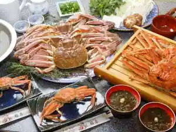
Minshuku Fukushima
Family-run minshuku in Oshima, Oi with local seafood dinners.
古民家一棟貸しの宿 よざえもん
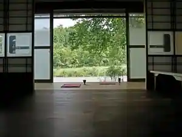
Ko Minka Hitomune Kashi No Yado Yozaemon
Inn in Natashonodaowari, Oi with a renovated traditional house and a quiet countryside setting.
Dining
日本料理 崇
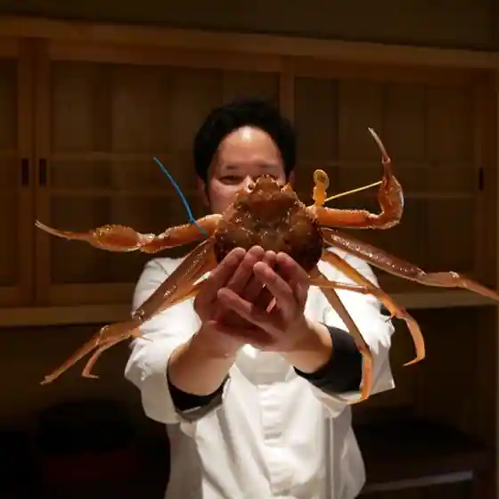
Nihonryori Su
うみ・ぼ～ず
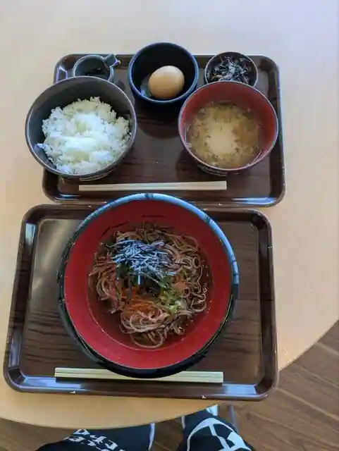
Umi Bo ~ Zu
SAVOR
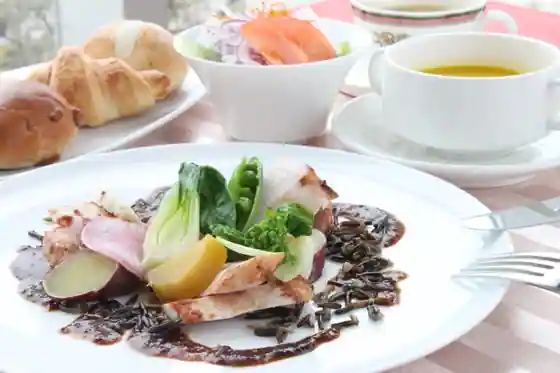
SAVOR
道の駅 うみんぴあ大飯 特産品販売所
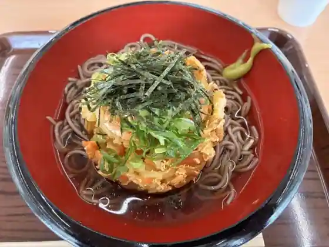
Michi No Eki Uminpia Oi Tokusanhin Hanbaijo
そば処 よってっ亭
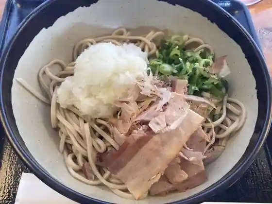
Soba Tokoro Yottetsu Tei
ジェラート&カフェ
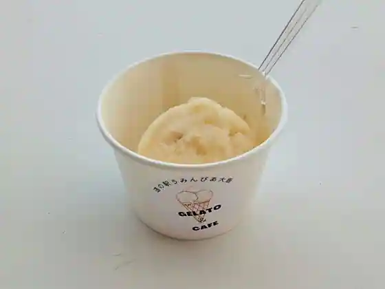
Jierato & Cafe
ホテルうみんぴあ
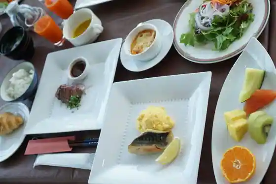
Hotel Uminpia
自然薯とろろ iheee
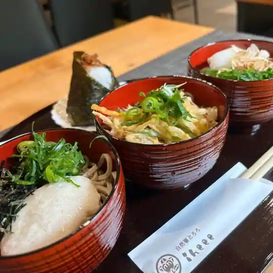
Shizen Sho Tororo iheee
四万十
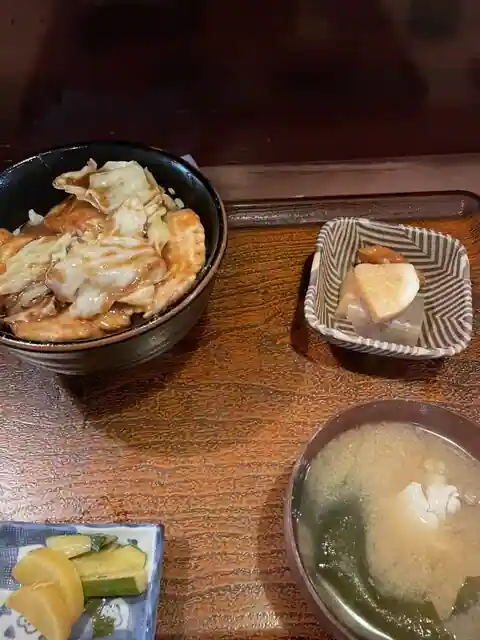
Shimanto
美食ダイニング おこ
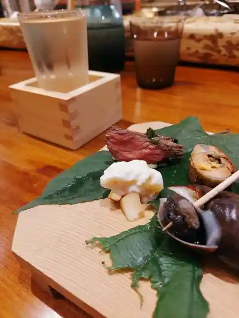
Bishoku Dining Oko
道の駅名田庄
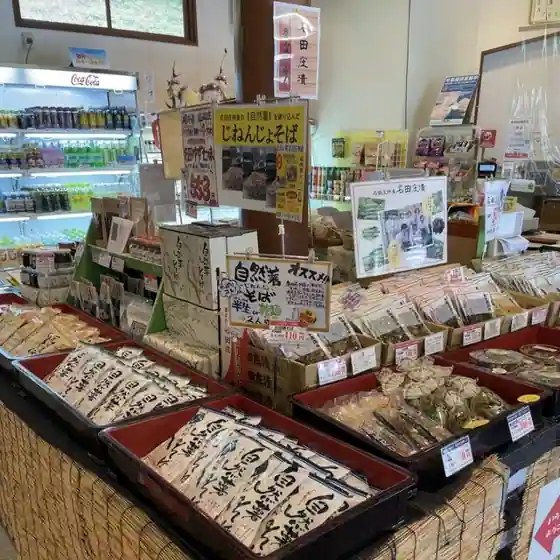
Michi No Ekimei Ta Sho
Cerchio
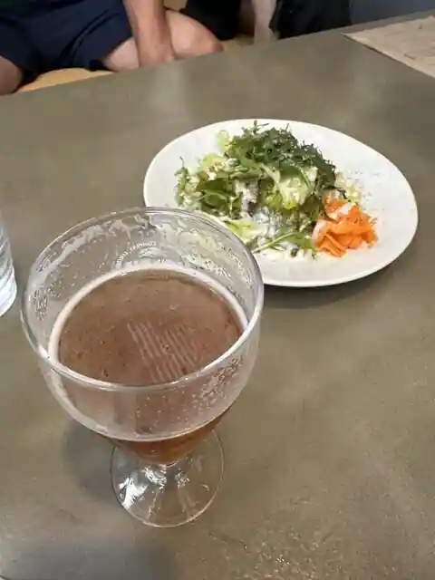
Cerchio
料理民宿 福島
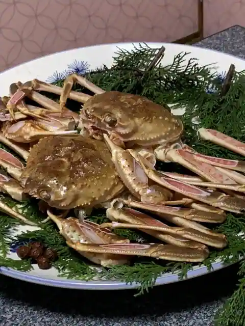
Ryori Minshuku Fukushima
料理旅館 新佐
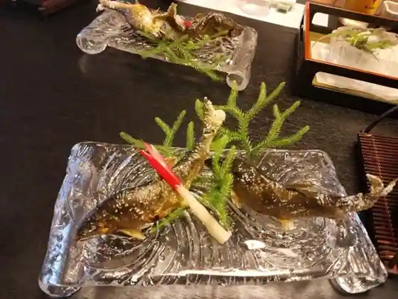
Ryori Ryokan Shin Sa
情報交差点ぽーたる 軽食コーナー
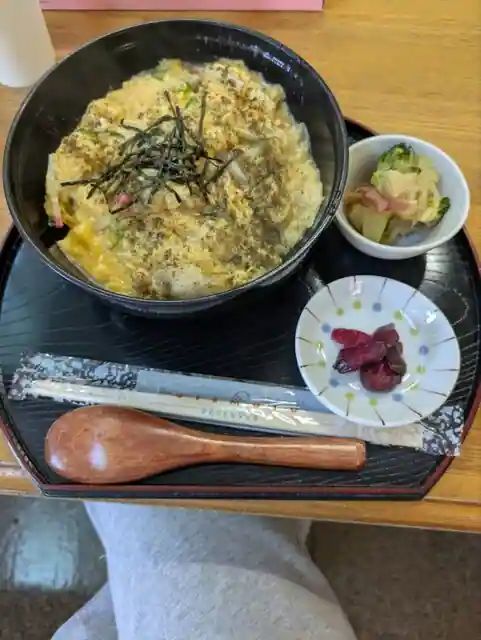
Johoko Sa Potaru Keishoku Kona
Blue note
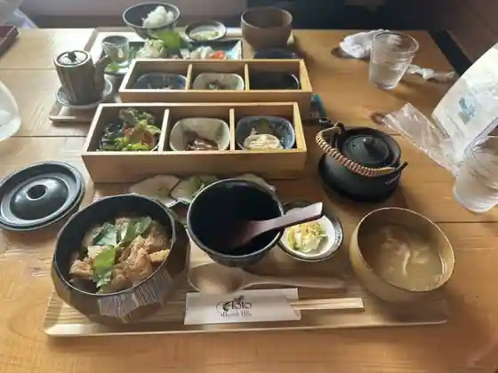
Blue note
ラジャ
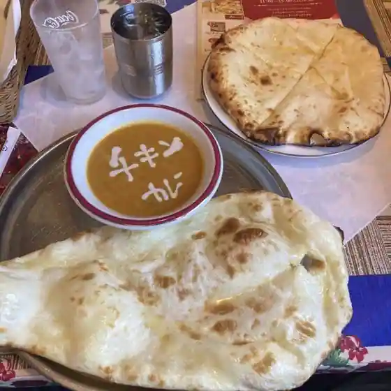
Raja
伸
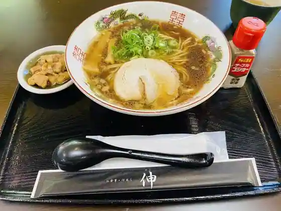
Shin
la mer
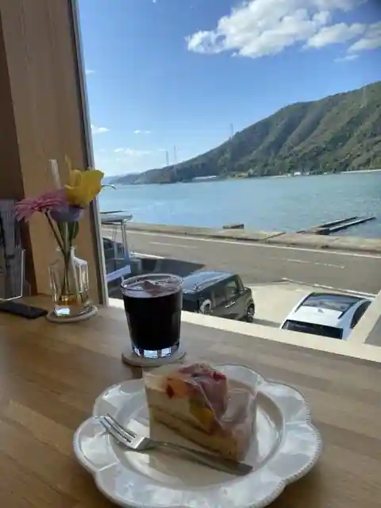
la mer
宮古島ロースタリーカフェ
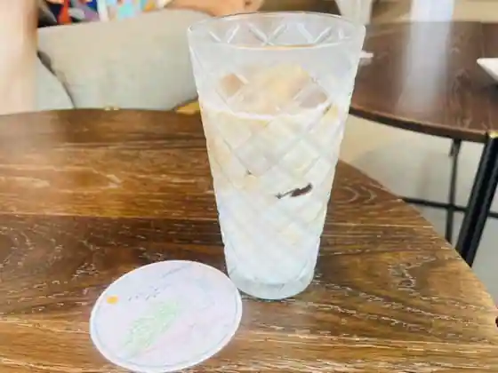
Miyako Shima Rosutari Cafe
ワカサノパンヤ
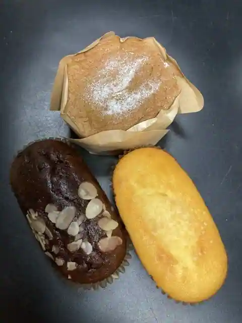
Wakasano Bakery Ya
麒麟
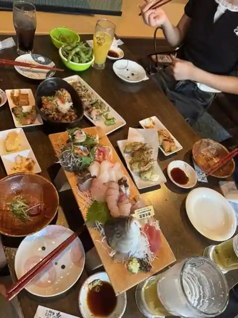
Kirin
居酒屋 月
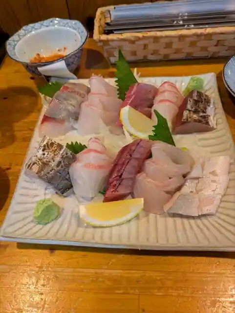
Izakaya Gatsu
Sights
Erugaia Oi

Fukuiken Kodomo Kazoku Kan

Ki no Ko Forest

Aka Sho Saki Oto Campground

SEE SEA PARK
Roadside Station Uminpia Oi
Akaguri Umizuri Park
Rentasaikuru - Oi − Wakasa Hongo Eki
I Ashi Tera
Wakasa Paru MAMIYA (Mamiya Shinju Yoshokujo)
Akaguri Enchi
Tsune Zendera
Kamo Shrine
Choraku Tera
Kiyokumo Tera
Roadside Station Natasho
Fusha Hall (Wakasa Hongo Eki)
Matsuki Shokichi Bijutsu Memorial Museum Kyodoshi Ryo Kan
Jaku Shu Itteki Bunko
Chon In
no Shika Falls
Akinai Kan
Natasho Soba Tokoro Yottetsu Tei
Oi Johoko Sa Ten Potaru
Kurashi no Fukugo Shisetsu hibi
Fudo no Taki Park
Karida Hime Shrine
Koyomi Hall
Ikiiki Choju Village Amii Shan Oi
Natasho no Sakura Namiki (Odayaka Sakura Namiki)
Pure Park Oi
Hachigamine Kazokuryoko Village
Saburi Kawa Park
Zukin Yama Seishonen Ryoko Village
Nature Sho Tororo iheee
Komatsu Shigemori Tsuka
Oi Town Hall